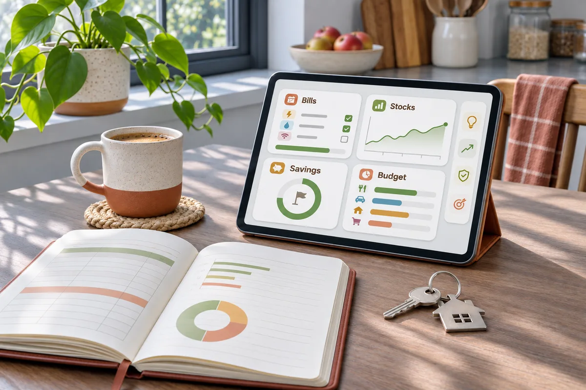
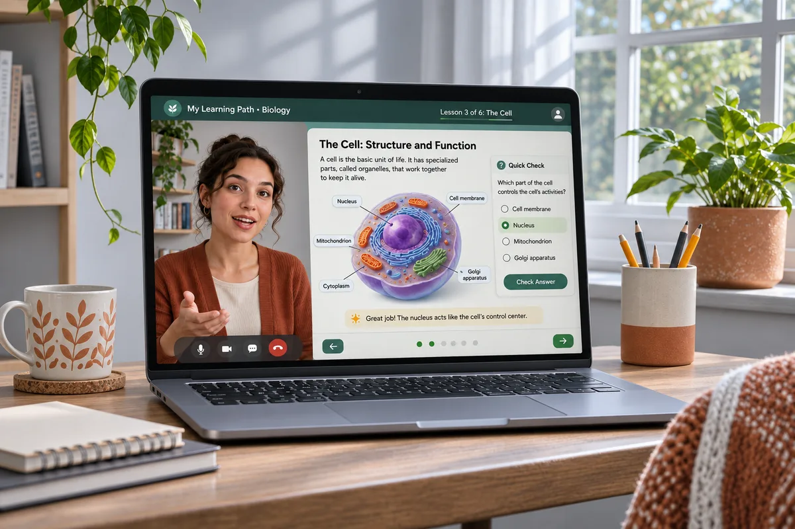

22%
of jobs worldwide are expected to be disrupted by 2030: 170 million new roles created and 92 million displaced.

A plan and a toolkit for working people who'd rather shape what's coming than wait for it.
Start with the AI Readiness Score. It takes about 2 minutes, and no email or sign-up is required.
Turn AI from the thing that replaces you into the assistant that works for you.
Explore Work →AI now helps decide who gets approved, what the rent is and where you can live. Know your rights and your options.
Explore Housing →
AI is changing how we earn, pay and save. See what's shifting and how to protect your money.
Explore Finance →
Skills are starting to count as much as diplomas. See how you'll keep learning, and how your kids will learn, with AI.
Explore Education →Healthcare keeps hiring while AI takes over the paperwork. See which tasks are changing in your job.
Explore Healthcare →Three phases, built in public. Watch each one happen and help shape it.
A free newsletter and step-by-step guides on using AI in your work, learning, home and money.
The Readiness Score is live. Next: simple calculators for job risk, relocation and a paycheck buffer.
Working people rebuilding their careers, homes and finances together, starting with newsletter subscribers.
22%
of jobs worldwide are expected to be disrupted by 2030: 170 million new roles created and 92 million displaced.
1 in 4
U.S. paid workdays now happen at home, up from about 7% before 2020. Where you work is shaping where you can live.
Source: WFH Research (Stanford), 2026
37%
of U.S. adults couldn't cover a surprise $400 expense with cash or its equivalent. Little cushion if a job changes.
Source: Federal Reserve, Economic Well-Being of U.S. Households in 2025
AI Revolution Update is my free newsletter about AI and everyday life: work, home, money, learning and health care. It covers AI broadly, not only this topic.
You'll finish signing up on Substack, where the newsletter lives. Unsubscribe anytime.